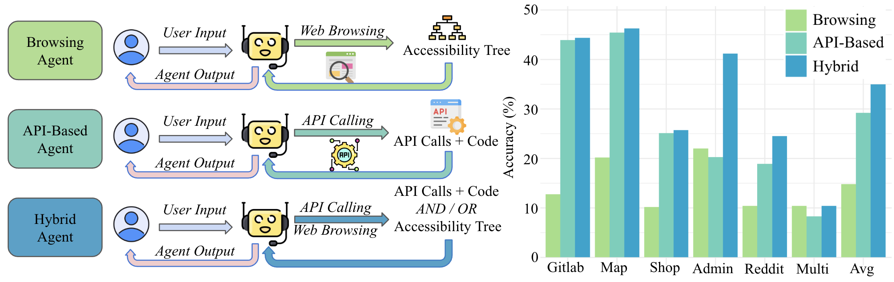
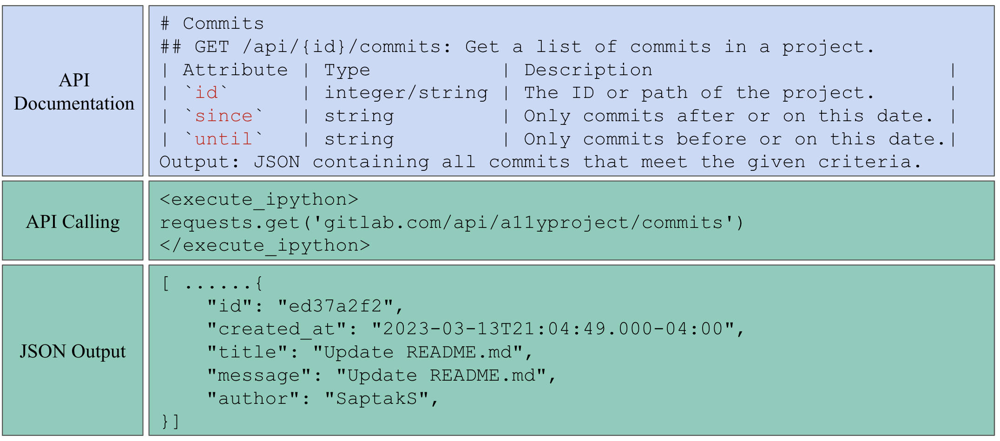

This project explores a novel approach to web agents by enabling them to use APIs in addition to traditional web-browsing techniques.
By leveraging API calls, agents can perform tasks more efficiently and accurately, especially on websites with comprehensive API support.
API-Based Agent: The API-based agent leverages application programming interfaces (APIs) to interact directly with web services, bypassing traditional web-browsing actions like simulated clicks.
Hybrid Agent: a agent that combines the power of API-Based Agent and traditional Web-Based Agent, capable of interleaving API calls and Web Browsing.
Real-World Web Task Evaluation and Analysis: On WebArena, a real-world web task benchmark, our hybrid agent achieve sota performance among task-agnostic models.
Web browsers are a portal to the internet, where much of human activity is undertaken.
Thus, there has been significant research work in AI agents that interact with the internet through web browsing.
However, there is also another interface designed specifically for machine interaction with online content: application programming interfaces (APIs).
In this paper we ask -- what if we were to take tasks traditionally tackled by browsing agents, and give AI agents access to APIs?
To do so, we propose two varieties of agents: (1) an API-calling agent that attempts to perform online tasks through APIs only, similar to traditional coding agents, and (2) a hybrid agent that can interact with online data through both web browsing and APIs.
In experiments on WebArena , a widely-used and realistic benchmark for web navigation tasks, we find that API-based agents outperform web browsing agents, as depicted in Figure 1.
Hybrid agents outperform both others nearly uniformly across tasks, resulting in a more than 20.0% absolute improvement over web browsing alone, achieving a success rate of 35.8%.
These results strongly suggest that when APIs are available, they present an attractive alternative to relying on web browsing alone.

Figure 1: A comparison of three types of agents.
The Browsing Agent performs tasks through web browsing only, utilizing the accessibility tree to interact with web pages, achieving an average performance of 14.8% on WebArena.
The API-Based Agent performs tasks by making API calls and generating code without relying on web browsing, achieving an average accuracy of 29.2%.
The Hybrid Agent combines both methods, dynamically switching between web browsing and API calling, depending on the task.
This allows the execution of either API calls or web browsing actions, or both in combination, improving performance by more than 5 percentage points compared to the API-Based Agent.
This project is structured around three key aspects:
§API-Based Agent: The API-based agent is designed to interact directly with web services using structured API calls, bypassing traditional web-browsing methods like simulated clicks and form inputs. By leveraging predefined endpoints, the agent can efficiently retrieve and manipulate data, reducing the number of steps required to complete tasks. This approach not only improves task accuracy but also enhances efficiency, especially on websites with comprehensive API support.
§Hybrid Agent: The hybrid agent combines the strengths of API-based interactions and traditional web browsing by dynamically switching between the two methods based on the task requirements. This flexibility allows the agent to leverage API calls when they are available and efficient, while seamlessly resorting to web browsing actions for tasks that lack adequate API support. As a result, the hybrid agent is capable of handling a wider range of tasks with improved accuracy and efficiency compared to API-Based and traditional web agents.
§Real-World Task Evaluation and Analysis: Are compare the agent on the WebArena benchmark. We are the first to perform a comparison of API-based agents, browsing-only agents, and hybrid agents. The results demonstrated that API-based agents outperformed browsing-only agents on websites with comprehensive API support, while the hybrid agent achieved the highest overall accuracy by dynamically switching between APIs and web browsing. Our analysis shows that the hybrid approach not only improves task efficiency but also provides greater flexibility and robustness in handling diverse and complex web interactions.
we focus on WebArena tasks, which simulate real-world scenarios to evaluate an agent's ability to complete diverse web-based activities.
Tasks in WebArena include interacting with platforms like Gitlab (to manage projects and repositories), Reddit (to browse and post content), e-commerce websites (for shopping), and mapping services (for trip planning).
Figure 2: The API-based agent can often solve problems in many fewer function calls than traditional browsing agents.
In this task, web browsing failed to solve the intent "find the number of commits the user `SaptakS` made to the repo `a11yproject`" after 15 steps, while our API-based agent successfully completed the task with only three lines of code.
Web Browsing Agent
A baseline web browsing agent leverages the accessibility tree of web pages, which organizes interactive elements like buttons, input fields, and links in a hierarchical structure.
This structure makes it easier for agents to navigate the web by simulating human-like browsing behaviors such as clicking, filling out forms, and moving between pages.
The agent maintains a comprehensive history of all its previous actions, allowing it to inform its future decisions based on past interactions.
However, due to the complexity of some web elements and their dynamic nature, the browsing agent struggles with tasks requiring numerous or intricate interactions.
For example, in the task in Figure 2, the agent needs to determine the number of commits made by a specific user to a project.
A traditional browsing-based approach involves logging in, navigating to the correct project, and attempting to scroll through and find the user's commits, and thus the task becomes too complex and fails after the agent's 15-step limit.
From Web Browsing to API Calling
In contrast to web browsing, API calling offer a direct interface for machines to communicate with web services, reducing operational complexity.

Figure 3: An example of API documentation showing how to get commits of a project, the API call using a Python script to retrieve commits from a project repository, and the resulting JSON response.
APIs and API Documentation
Websites with API support offer pre-defined endpoints for efficient task execution using standardized protocols like REST.
These APIs enable interactions via HTTP requests (e.g., GET, POST, PUT) and return structured data such as JSON objects.
API documentation is typically provided in formats like README, OpenAPI YAML, or plain text, offering guidance on using the APIs.
For instance, Figure 3 shows the official README documentation of a Gitlab API GET /api/{id}/commits. It documents the functionality, input arguments, and output types of the API.
For example, one could use the Python requests library, by calling requests.get("gitlab.com/api/a11yproject/commits"), to retrieve all commits of the repository a11yproject.
This would return a JSON list containing all the commits to this repo, as shown in Figure 3.
Transitioning from Web Browsing to API Calling
Approaches utilizing APIs is avoid complexity in web browsing, and can minimize the steps involved in complex workflows.
For example, as discussed in Figure 2, to accomplish the task of finding the number of commits by SaptakS in a11yproject, a basic method for implementing API calling, such as CodeAct , could directly call the repository's commit history via a simple API request GET /api/a11yproject/commits and then filter the results to find the commits made by SaptakS.
The task could completed in just three lines of Python code, showcasing the clear efficiency and precision that methods based on API calling could offer compared to web browsing.
Obtaining APIs for Agent Use
The process of acquiring APIs typically involves looking up official API documentation on a website.
To maintain a structured and readable format of API documentations, we could utilize either OpenAPI YAML-style and README-style documentations.
Some websites might offer official YAML oor README documentations of APIs, and in such cases, in the prompt we provide API documentations sourced directly from the public API documentation provided for the website.
In other cases, where no official YAML or README documentations are provided, we could leverage LLMs like GPT-4o to generate these YAML or README files.
By prompting GPT-4o with the relevant implementation details of the APIs (for example, the implementation of the APIs), we could generate comprehensive documentation, including input parameters, expected outputs, and example API calls, as depicted in Figure 3.
One-Stage Documentation for Small API Sets:
For websites with a smaller number of API endpoints, we directly incorporate the full documentation into the prompt provided to the agent.
Specifically, we use a threshold of 100 APIs, but this could be adjusted depending on the supported language model context size.
Two-Stage Documentation Retrieval for Large API Sets:
For websites with a larger number of endpoints, providing the full documentation directly within the prompt was impractical due to the size limitations of agent inputs.
To address this, we employed a two-stage documentation retrieval process, which allowed access to only the relevant information as needed, keeping the initial prompt concise.
In the first stage, the user prompt could provide a description of the task, with a list of all available API endpoints along with a very brief description of each API.
This initial summary helps facilitating understanding the scope of the available APIs while staying within the prompt size constraints.
In the second stage, if the model determines that it needs detailed information about a specific API endpoint or some API endpoints, it can use a tool called get_api_documentation.
This tool searches a dictionary that maps an API to its documentation, enabling the model to retrieve the full README or YAML documentation for any given endpoint by calling get_api_documentation with the endpoint's identifier.
This might include the input parameters, output formats, and examples of how to interact with the endpoint.
For example, to retrieve the documentation for the endpoint GET /api/{id}/commits, the agent would call get_api_documentation("GET /api/{id}/commits"), and an example returned API documentation is the documentation in Figure 3.
Hybrid Browsing+API Calling Agents
Then, the question arises: given the benefits of API calling, should we discard web browsing altogether?
The key limitation is that not all websites provide comprehensive or well-documented APIs, necessitating traditional web browsing in certain cases.
To address this, we propose a hybrid agent that dynamically switches between API calls and web browsing based on task requirements.
This agent has three options per step: communicating in natural language, generating Python code for API calls, or performing web browsing actions.
The hybrid agent's prompt includes both API documentation and web-browsing instructions, allowing it to adapt flexibly to each task's demands.
This approach improves performance by leveraging the strengths of both methods, depending on API availability and documentation quality.
Experimental Setup
Websites
Gitlab
Map
Shopping
Admin
Reddit
Number of Endpoints
988
53
556
556
31
Doc Quality
Good
Good
Fair
Fair
Poor
Table 1: Number of endpoints, quality of API, and documentation quality for WebArena websites.
Here, we provide a detailed analysis of the API support for various websites used in the WebArena tasks, categorized into three levels: good, fair, and poor.
The availability, functionality, and documentation of APIs, as described in Table 1, play a crucial role in the efficiency and flexibility of our agents.
Good API support: Gitlab and Map demonstrates good API support, since they provide significant coverage for the tasks in WebArena and maintain good API documentation.
Fair API support: The Shopping and Shopping Admin websites provide a reasonable level of support for common shopping tasks such as managing products, categories, and customer accounts, while some features are absent, such as the ability to add items to a wish list. The API documentation is fairly detailed and covers most core functionalities.
Poort API support: The Reddit tasks in WebArena are based on a self-hosted limited clone of the Reddit website, with limited functionalities as compared to the official site. It offers no API documentation, making it the least API-friendly website in the benchmark.
Evaluation Framework
We employed OpenHands as our primary evaluation framework for developing and testing our agents, as it is an open-source platform designed for creating AI agents that interact with both software and web environments .
OpenHands supports a variety of agent interfaces, allowing agents to execute actions while maintaining a detailed record of past steps.
For coding tasks, it incorporates CodeAct , providing a sandboxed bash environment and Jupyter IPython capabilities.
Additionally, OpenHands includes a web navigation agent using BrowserGym, which operates within a Chromium web browser powered by Playwright .
However, a limitation is that existing agents within OpenHands are specialized either in web browsing or coding/API-based interactions, but not both.
To address this, we developed two new agents: an API-based agent that leverages the CodeAct framework and specialized instructions for API usage, and a hybrid agent that integrates web browsing functionalities with API calls.
The hybrid agent dynamically selects between browsing actions and API calls based on task requirements, leveraging the current browser state, prior actions, and action outcomes.
All agents use GPT-4o as the base large language model.
Results
Agents
Gitlab
Map
Shopping
Admin
Reddit
Multi
AVG.
WebArena Base
15.0
15.6
13.9
10.4
6.6
8.3
12.3
AutoEval
25.0
27.5
39.6
20.9
20.8
16.7
26.9
AWM
35.0
42.2
32.1
29.1
54.7
18.8
35.5
SteP
32.2
31.2
50.8
23.6
57.5
10.4
36.5
Browsing Agent
12.8
20.2
10.2
22.0
10.4
10.4
14.8
API-Based Agent
43.9
45.4
25.1
20.3
18.9
8.3
29.2
Hybrid Agent
44.4
45.9
25.7
41.2
28.3
16.7
35.8
Table 2: Performance of Agents across WebArena Websites. Note that SteP uses prompts inspired specifically by WebArena test set tasks, while other methods are task-agnostic. We achieve the highest performance among the task-agnostic agents.
The main results, shown in Table 2, highlight the performance of agents across websites in the WebArena benchmark.
The API-Based Agent performed consistently well, achieving higher scores than the Browsing Agent due to its optimized API-calling capabilities, allowing it to efficiently complete tasks with minimal web browsing.
The Browsing Agent, focused solely on navigating web interfaces, struggled in most domains.
The Hybrid Agent, which integrates both API calling and web browsing, outperformed the API-Based and the Browsing agents in all categories.
Its ability to switch dynamically between API and web interactions provided flexibility, enabling higher performance even in cases where APIs were incomplete or unavailable.
By combining both approaches, the hybrid agent ensures success in situations where API-only methods fall short, using web browsing as a necessary backup.
Therefore, the hybrid agent achieves sota performance among agents that are task-agnostic.
Does API Quality Matter?
The short answer is yes, API quality does significantly impact the performance of the API-based agent.
High-quality APIs, with comprehensive, well-documented endpoints, enable efficient and accurate task execution.
This allows the API-based agent to rely on fewer web browsing actions, while hybrid agents can switch more flexibly between methods.
Websites like Gitlab and Map, which offer robust APIs, result in the highest task completion accuracy.
Conversely, low-quality APIs hinder agent performance, forcing hybrid agents to rely more on web browsing.
For instance, on Reddit, the initial API-based agent struggled due to limited API availability.
After manually introducing additional APIs, performance improved from 9.43% to 18.9%, highlighting the importance of thorough API support.
Figure 4: Case 1: the hybrid agent succeeds while the browsing agent and API-based agent both fail
Case Study 1
One example where the hybrid agent succeeded, while both the API-based and browsing agents failed, involved a task from the Shopping Admin domain.
The query was to "delete all negative reviews for Sybil running short," a product listed in the shopping admin interface.
In this instance, the API-based agent failed because no relevant API endpoints were available for retrieving or deleting reviews.
Similarly, the browsing agent failed, as completing this task purely through web navigation required too many steps, as depicted in Figure 4.
This complexity made the task challenging for an agent relying solely on web interactions.
However, the hybrid agent successfully completed the task by leveraging both API and browsing functionalities. An example trace of the hybrid agent shown in Figure Figure 4.
This case highlights the hybrid agent's ability to efficiently combine API calls with web interactions, allowing it to tackle complex multi-step tasks that would be difficult or impossible for solely browsing or solely API-based agents.
Figure 5: Case 2: the API-based agent succeeds while the browsing agent and the hybrid agent fails.
Case Study 2
Conversely, there are instances where the API-based agent outperforms the hybrid agent.
One such case occurred in the GitLab website, where the task was to "tell me the email address of the contributor who has the most commits to ai".
The API-based agent successfully completed this task by utilizing the GET /api/{id}/contributors API endpoint to retrieve the contributor with the highest number of commits and their associated email address.
On the other hand, the hybrid agent attempted to solve the task through browsing but encountered significant challenges. Accessing this information through web browsing required navigating GitLab's interface, locating the correct repository and branch, and identifying the top contributor manually, a task that might be too difficult to perform through web navigation alone.
As a result, both the browsing agent and the hybrid agent failed to complete the task. This case demonstrates an example where API access provides a more straightforward solution than browsing in contexts requiring structured data retrieval.
Conclusion
We propose new web agents that use APIs instead of traditionally browsers.
We found that API-based agents outperform browsing-based counterparts, especially on websites with sufficient API support.
Hence we further propose an agent that is capable of switching between using APIs or browsers and empirically outperforms agents that only uses one of the two interfaces.
For future work, we aim to explore methods for automatically inducing APIs using techniques such as Agent Workflow Memory (AWM) .
These methods could identify and generate API calls for websites lacking formal API support, further expanding the applicability and efficiency of API-based approaches.
By automating the discovery and utilization of APIs, we envision even more robust agents capable of handling diverse web tasks with minimal reliance on manual interaction through browsing.
Acknowledgement
This work was supported in part by a grant from DSTA Singapore.
The authors would like to thank CMU NeuLab colleagues for their constructive comments.
The authors would like to thank Cambrian team for their project webpage template.
BibTeX
@article{song2024browsingapibasedwebagents,
title={Beyond Browsing: API-Based Web Agents},
author={Yueqi Song and Frank Xu and Shuyan Zhou and Graham Neubig},
journal={arXiv preprint arXiv:2410.16464},
year={2024},
url={https://arxiv.org/abs/2410.16464}
}